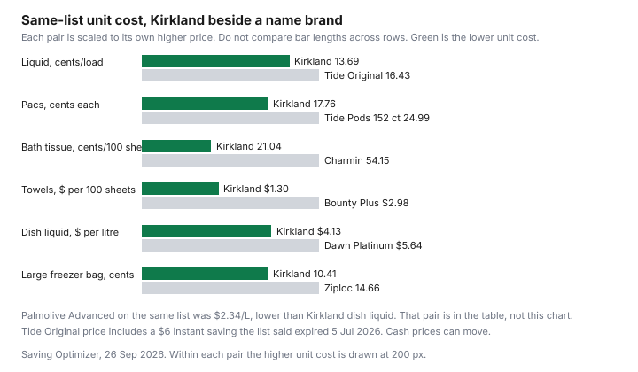

Household Items and Supplies · Canada
What to Buy at Costco Canada for the House (and What's Cheaper Elsewhere): Paper, Laundry, Cleaning, Batteries
A Costco membership does not make every jug in the household aisle a bargain. It makes a large pack available. The pack is a bargain when its unit price beats the other tag you would have paid, and when the last sheet gets used. This page stays on paper, laundry, cleaning, and the bags and foil that showed up on one dated list. Food, gas, and the membership fee have their own guides.
The list is the Costco East cleaning post of 10 Jun 2026, Ontario and Atlantic, flyer window 8 Jun to 5 Jul 2026. It is a fan transcription of warehouse prices, not a Costco press release. Treat every figure as that date and that region. If your warehouse's tag has moved, the method still works and the cents do not.
Disclosure: Cash-back portal types for online household orders are an offer type. Saving Optimizer may earn a commission if we later add a partner link. We do not currently claim a portal partnership. A portal does not change a warehouse unit price. Education only.
Key takeaways
- On the 10 Jun 2026 list, Kirkland liquid detergent was 13.69 cents per advertised load, Kirkland tissue was 21.04 cents per 100 sheets, and Kirkland paper towel was $1.30 per 100 sheets. Those beat the Tide, Charmin, and Bounty rows beside them.
- Kirkland dish liquid was $4.13 per litre. Palmolive Advanced on the same list was $2.34 per litre. The store brand lost that row.
- The coupon window on that post was 8 Jun to 5 Jul 2026, with instant-saving end dates of 21 Jun or 5 Jul. Warehouse price adjustments, on Costco's help page published 10 Sep 2025, are 30 days, in stock, inside the promotional dates.
- No named laboratory test of Kirkland household goods was opened. The comparison here is the price list, not a panel of members.
- Gold Star $65 and Executive $130, plus tax, are the fees on the conditions dated 1 Aug 2026. Break-even stays on the Food guides.
Costco household aisle winners: Kirkland paper, laundry, trash bags, batteries, and filters
Paper won on the list that was opened. Kirkland bathroom tissue, 30 rolls of 380 sheets at $23.99, is 21.04 cents per 100 sheets. Cashmere Premium 2-ply, 40 rolls of 250 sheets at $21.49 after a $5.50 instant saving the list said expired 5 Jul 2026, is 21.49 cents. Charmin Ultra Soft, 30 rolls of 200 sheets at $32.49, is 54.15 cents. Kirkland paper towel, 12 rolls of 160 sheets at $24.99, is $1.30 per 100 sheets, against Sponge Towels at $1.73 and Bounty Plus at $2.98. The sheet-count guide walks through the formula. Ply for Kirkland was not on the list line. If ply is the reason you buy Charmin, the 54.15 cents is the price of that preference on this date, not a proof that the sheets are the same size.
Laundry won for the Kirkland liquid jug. 146 washloads at $19.99 is 13.69 cents per advertised load. Tide Original, also 146 loads, was $23.99 and 16.43 cents, with a $6.00 instant saving the list said expired 5 Jul 2026. Gain Original was 15.06 cents. Kirkland pacs, 152 at $26.99, were 17.76 cents each, still under Tide Pods at 24.99 cents for the 152-count box. The dose you pour can erase the gap. That is the detergent guide.
Trash bags are a unit price of one bag, because the list gave counts. Kirkland large garbage bags, 100 at $14.99, are 14.99 cents a bag. Kirkland clear bags, 60 at $12.99, are 21.65 cents. Kirkland drawstring kitchen bags, 200 at $25.99, are 13.00 cents. Kirkland home and office bags, 320 at $21.99, are 6.87 cents, and they are a different bag than a kitchen drawstring. Do not compare 6.87 cents with 14.99 cents as if the bags were the same job. No competing brand's bag was on the list, so "winner" here means "here is the unit," not "cheaper than Walmart."
Batteries and filters are in the heading because shoppers look for them in this aisle. They were not on the cleaning list opened for this draft. There is no cents-per-battery and no filter price. Furnace filters in particular vary by size. A cheap filter of the wrong size is not a saving. When you have the card in your hand, divide by the count, and for a filter divide by the months the maker says it lasts, which this page does not invent.
| Item | Costco line | Unit | Beside it | Verdict on this date |
|---|---|---|---|---|
| Bathroom tissue | Kirkland, 30 × 380 sheets, $23.99 | 21.04 cents per 100 sheets | Cashmere 21.49 cents after a $5.50 saving the list said expired 5 Jul 2026. Charmin Ultra Soft 54.15 cents. | Costco on this list. Other banners were not priced. |
| Paper towel | Kirkland, 12 × 160 sheets, $24.99 | $1.30 per 100 sheets | Sponge Towels $1.73. Bounty Plus $2.98. | Costco, if you will use 1,920 sheets. |
| Liquid detergent | Kirkland, 146 loads, $19.99 | 13.69 cents per advertised load | Gain 15.06 cents. Tide Original 16.43 cents after a $6.00 saving the list said expired 5 Jul 2026. | Costco on advertised loads. Your dose can erase it. |
| Dish liquid | Kirkland, 2.66 L, $10.99 | $4.13 per litre | Palmolive Advanced, 4.27 L, $9.99, is $2.34 per litre. Dawn Platinum is $5.64 per litre. | Name brand, inside the warehouse. Palmolive. |
| Large freezer bags | Kirkland, 6 × 32, $19.99 | 10.41 cents a bag | Ziploc large freezer, 3 × 50, $21.99, is 14.66 cents. | Costco, if 192 bags get used. |
| Trash bags | Kirkland large, 100 at $14.99 | 14.99 cents a bag | No other brand's bag was on the list. Kitchen drawstring was 13.00 cents and is a different bag. | Depends. Unit only. Not a win over Walmart. |
| Batteries and filters | Not on the list | No figure | Not opened | Depends on the card in your hand. No price here. |
| Rule | What the opened page says |
|---|---|
| Coupon book this draft could date | Costco East post of 10 Jun 2026: flyer 8 Jun through 5 Jul 2026. Instant savings on that list expire 21 Jun or 5 Jul 2026, as printed beside the item. |
| Warehouse price adjustment | Costco help page published 10 Sep 2025: 30 days, item in stock, demonstration merchandise excluded, inside the promotional dates, membership counter. Online orders use a separate page. |
Items often cheaper elsewhere: small-size cleaners, some name brands on flyer sale
Small can win. PC dishwashing liquid on the No Frills flyer for 24 to 30 Sep 2026, Darren's No Frills, 372 Pacific Ave, Toronto, was $1.00 for 638 or 739 mL. At 638 mL that is $1.57 per litre. Kirkland's 2.66 L jug at $10.99 is $4.13 per litre. The small bottle is the lower litre on these two dated lines. You will buy it more often. That is still cheaper per litre until the trip costs more than the gap.
A name brand can win inside Costco, which is the surprise. Palmolive Advanced, 4.27 L at $9.99, is $2.34 per litre, against Kirkland at $4.13 and Dawn Platinum, 2.66 L at $14.99, at $5.64. If the household is standing in the warehouse, the Palmolive jug is the dish-soap buy on that list. A flyer sale at another banner only needs to beat $2.34 per litre, not beat a myth that Costco is always lowest.
The No Frills line that grouped Tide Simply 2.72 L with Fleecy softener and dryer sheets at $7.99 is not used as a per-load win. Three products, one price, no load count. If the store will sell you the detergent alone at $7.99, read the jug's load count and divide. Until then it is a flyer to check, not a figure in the chart.
Using the monthly coupon book and Costco Canada price-adjustment window (30 days)
The book this draft could date is one window. The Costco East post of 10 Jun 2026 covers a flyer from 8 Jun through 5 Jul 2026. Instant savings on that list expire on the date printed beside them, 21 Jun or 5 Jul 2026, not "sometime this season." Tide Original's $6.00, Cashmere's $5.50, and the Lysol wipes' $5.00 are examples. When you shop from a coupon book, write the end date next to the price before you divide. A book from June is not the price in the building today. This page does not claim Costco has promised that every month will look like that June book. It claims you should read the book you were handed.
If the price falls after you pay, the warehouse rule on the help page published 10 Sep 2025 is 30 days from the purchase, item in stock, demonstration merchandise excluded, and the adjustment has to fall inside the promotional dates. Membership counter. If you bought online, the same help page points you to a separate Costco.ca orders policy, which this draft did not re-state line by line. A household jug you already opened is a poor candidate for a mood-driven return. An unopened pack still inside 30 days, with the coupon still valid, is what the rule describes. Ask. Do not assume the rule covers a price you saw at a different warehouse after the coupon ended.
Kirkland vs name brand for household staples: what testers and members report
This section does not quote a test, because no named, dated laboratory or consumer-panel report on these Kirkland household goods was opened on 26 Sep 2026. A fan blog's comment that someone prefers Charmin is a preference. It is not a sheet-count and it is not a cleaning score. The dated evidence in hand is the price list. Kirkland tissue costs less per 100 sheets than Charmin on that list. Kirkland liquid costs less per advertised load than Tide Original. Kirkland dish liquid costs more per litre than Palmolive. That is the report.
If you need a performance test, run a small one. Buy the smaller name-brand pack once, if it exists, and the Kirkland pack once. Use them on the same soils, the same washer, the same dose. Keep the one you will finish. A household that "knows" Tide is better and has not compared a load is paying 16.43 cents for the knowledge. The store-brand guide separates products to switch now from products to test first. Laundry and toilet paper are in the test-first group there for a reason: feel and residue are personal, and the unit price is not.
Storage and use-up math: when bulk is a false saving for small households
Kirkland tissue is 30 rolls. At an illustrative one roll a week, the pack lasts 30 weeks. At two rolls a week, 15 weeks. Kirkland paper towel is 12 rolls of 160 sheets, 1,920 sheets. At an illustrative two sheets a day, that is 730 sheets a year and the pack lasts more than two years. Those rates are a worksheet, not a national usage study. A couple in a condo who cannot store a two-year paper-towel pack should buy the smaller unit even when the cents are worse, or split the pack. The couples framework is the membership version of that sentence.
False saving, priced. Charmin at 54.15 cents per 100 sheets versus Kirkland at 21.04 cents is a gap of 33.11 cents per 100 sheets. Over an illustrative 100 sheets a day, 36,500 sheets a year, the gap is $120.84. That calculated gap assumes you use both products at the same sheet rate and that you finish the Kirkland pack. If half the Kirkland pack is thrown out because it got damp, you did not save $120.84. The bulk guide is about food and the rule is the same: waste is a price increase.
Cross-link: membership break-even (Food) and Executive reward math
Household unit prices do not answer whether you should hold a card. Costco's membership conditions, dated 1 Aug 2026, say the Gold Star fee is $65 and the Executive fee is $130, plus applicable taxes, per 12-month period, each with a household card. The membership guide is where the $65 is set against a discounter habit. The Executive versus Gold Star guide is where the reward is calculated. This page does not re-derive either one. A cheap paper towel does not, by itself, pay a fee. A fee you already paid does not make a bad unit price good. Split the cart if the warehouse wins on paper and loses on the flyer proteins.

Sources & date stamps
- Costco East cleaning list, posted 10 Jun 2026, flyer window 8 Jun to 5 Jul 2026. Tissue, towel, detergent, dish liquid, Palmolive, Dawn, and trash-bag prices used above. Instant-saving end dates as printed on that list. Opened 26 Sep 2026.
- Costco help, price adjustment for warehouse items, published 10 Sep 2025, opened 26 Sep 2026. Thirty days, in stock, inside promotional dates, membership counter. Online orders referred to a separate page.
- Costco membership conditions and regulations, dated 1 Aug 2026, opened 26 Sep 2026. Gold Star $65 and Executive $130, plus tax, per 12 months. Reward math is not re-derived here.
- No Frills flyer, 24 to 30 Sep 2026, Darren's No Frills, 372 Pacific Ave, Toronto: PC dish soap $1.00 for 638 or 739 mL. Tide Simply line at $7.99 was grouped with other products and was not converted to a per-load price. No battery or filter price was on the cleaning list.
Frequently asked questions
Is Kirkland toilet paper cheaper than store brands elsewhere?
On the Costco East list posted 10 Jun 2026, Kirkland bathroom tissue was 21.04 cents per 100 sheets and Cashmere, after a dated instant saving, was 21.49 cents. Charmin Ultra Soft on that list was 54.15 cents. No Name, Great Value, and Royale prices were not opened, so this page does not say Kirkland beats every store brand in Canada. It beats the tissue packs on that list.
Are Costco batteries a good deal?
No battery SKU was on the cleaning list opened for this guide, so there is no cents-per-battery figure here. Divide the pack price by the count on the card, then compare with the card you would buy at another banner. A large count you will not use before the date on the pack is not a deal.
How does Costco's price adjustment work for household items?
Costco's warehouse help page, published 10 Sep 2025 and opened 26 Sep 2026, says in-warehouse purchases can be adjusted within 30 days if the item is in stock, demonstration merchandise excluded, and the request is inside the promotional dates. Ask at the membership counter. Online orders use a different Costco.ca page. A coupon that has expired is outside the promotional dates.
Is bulk worth it for a small household?
Only when the unit price wins and you will finish the pack. Kirkland tissue on that list is 30 rolls. At an illustrative one roll a week, that is 30 weeks. If the closet cannot hold it, the 21.04 cents is not the full cost. The couples guide and the bulk-waste guide cover membership and food. This page stops at the household aisle.
Does this post cover whether a membership is worth it?
No. Gold Star was $65 and Executive was $130, plus tax, on the membership conditions dated 1 Aug 2026. Whether that fee comes back is the Food guides linked below. This page does not re-do the break-even.